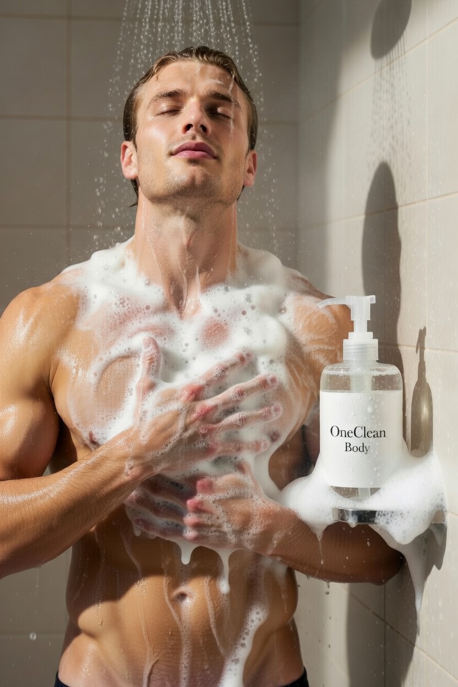
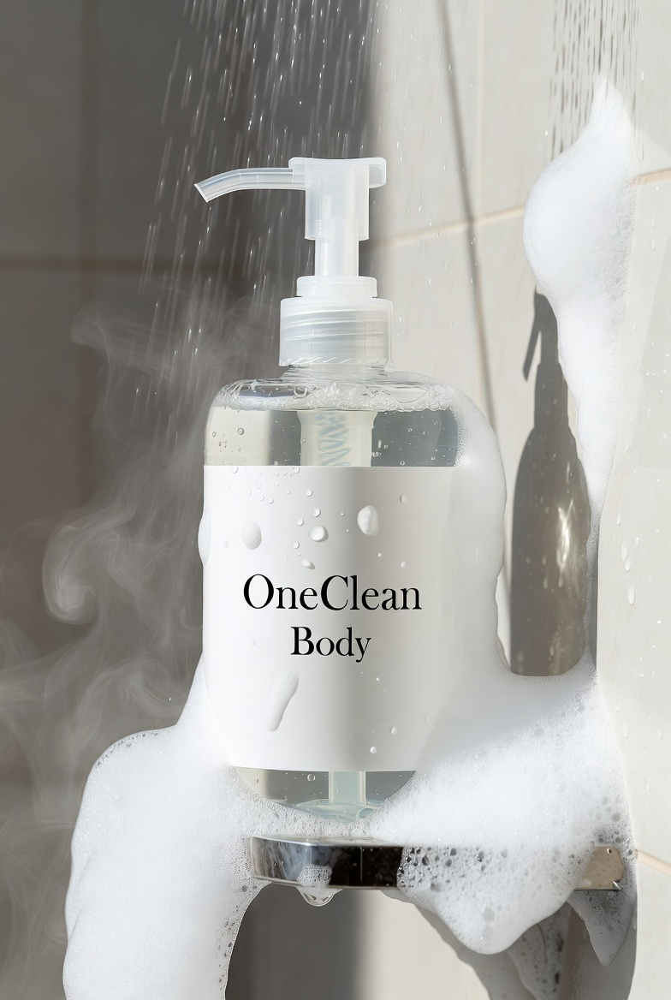

Everyday essentials
OneClean is built around useful products people already reach for every day, from shower routines to household cleaning.
Handmade cleaning products for home and body
OneClean creates handcrafted household and personal cleaning products designed to keep routines simple, effective, and easy to grow with as new essentials are added.
Current Lineup
Built around practical staples you can use every day, with room to expand into new product categories as the business grows.
Why customers choose us
OneClean is built around useful products people already reach for every day, from shower routines to household cleaning.
The site and brand story are designed to grow with you as you add new categories, scents, or specialized formulas.
Small-batch making helps you stay close to your process and keep quality, consistency, and care at the center of the business.
Our Purpose
For years I struggled with persistent health challenges that diet, exercise, and conventional approaches could not fully resolve. Despite following a strict autoimmune protocol and a low-histamine diet, I continued to experience discomfort.
Over time, I realized that many everyday commercial cleansers, detergents, and personal care products, including ones labeled natural, gentle, or hypoallergenic, contained ingredients and manufacturing byproducts that raised concerns for me.
That realization led me to take control: I began formulating my own surfactant-based cleansers, detergents, and skin and hair care products.
Every formula is designed around:
These products were developed first to meet my own daily needs for thorough yet gentle cleansing and household cleaning. They are designed to provide a simpler, more selective alternative to many mainstream options.
If you are also looking for personal care and household products made with careful attention to ingredient choices and formulation details, these recipes reflect the same standards I use every day.
My goal is straightforward: offer thoughtfully developed cleansers and care products that support a comfortable daily routine without compromising on cleaning results.
Current product categories
This section is intentionally easy to update. You can swap product names, add new categories, or expand each item with sizes, scents, or descriptions whenever your line grows.
Featured product
A dedicated feature area for your body wash, with the promotional ad taking center stage and room to expand this product story over time.

Personal care made for daily cleansing and a fresh routine.

A hair-care staple that fits naturally into the OneClean line.
Created for everyday loads and a cleaner clothing routine.
Complements your laundry products as part of a cohesive set.
Extends the brand beyond personal care into the home.
Reserve this space for future categories as your product line expands.
Why the brand works
Lead with the essentials people use most often across personal and household care.
Present every item as part of one thoughtful system instead of unrelated products.
Update the product list whenever you launch something new without needing a redesign.
Contact OneClean
Reach out for product questions, future offerings, or business inquiries about the OneClean line.